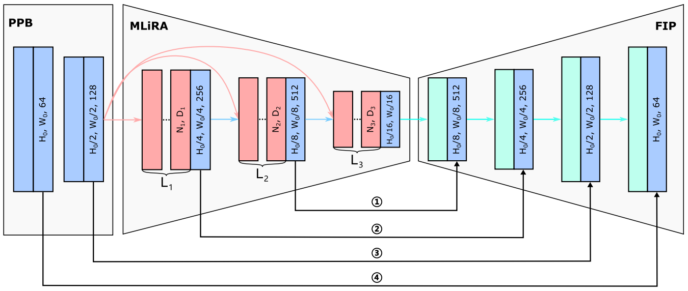

Wu Ze-linPh.D Student
Taiyuan University of Technology |
|
I am a third-year PhD student at Taiyuan University of Technology, under the supervision of Prof. Xueying Zhang. I obtained my B.Eng in Communication Engineering at Taiyuan University of Technology in 2020.
My research lies at the areas of medical image segmentation and deep learning. In particular, my current focus is mainly on stroke lesion segmentation, transformer, cross-modal learning.
|  |
Multi-scale Long-range and Regional Attention Network for Stroke Lesion Segmentation Zelin Wu, Xueying Zhang, Fenglian Li, Suzhe Wang, Lixia Huang Computers and Electrical Engineering,2022 (JCR Q2) |
| [07/2021] Innovation Project of Shanxi Graduate Education |